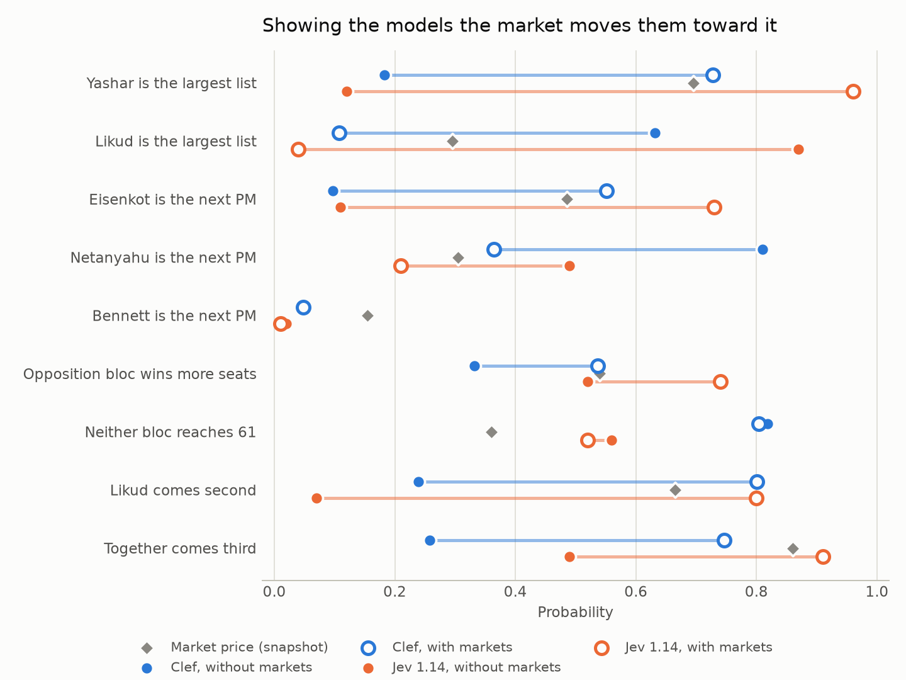
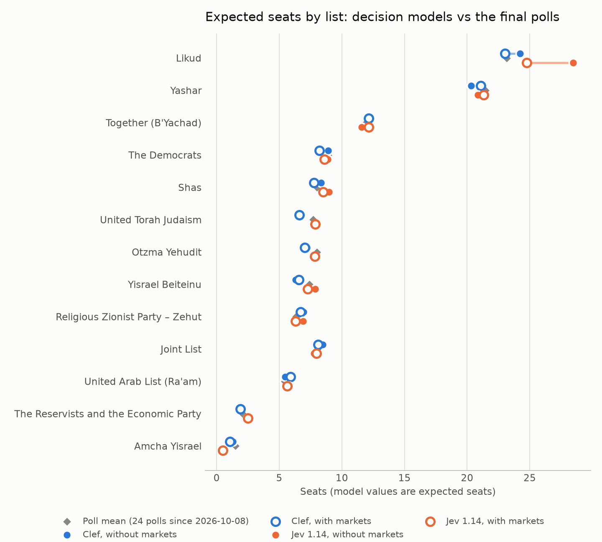
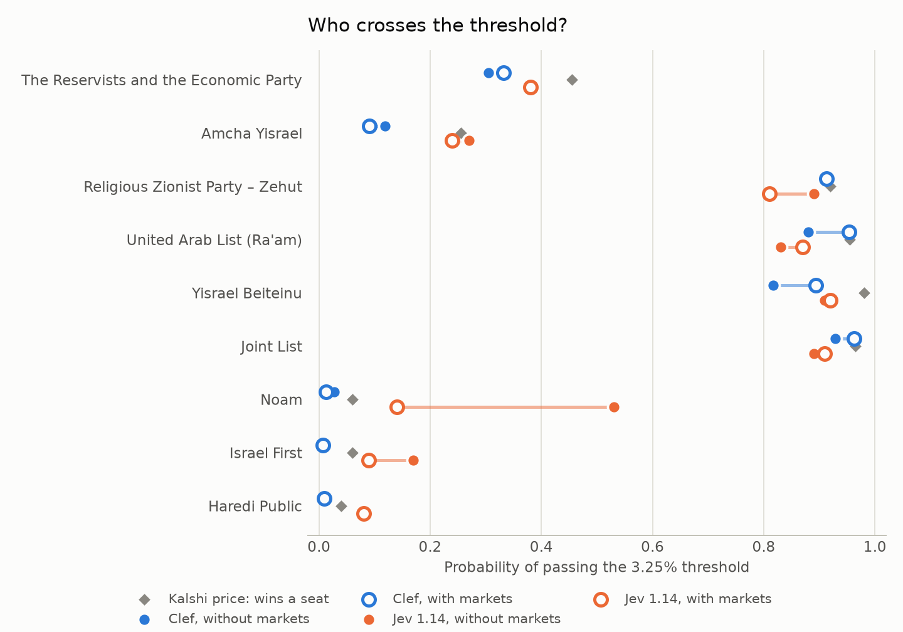
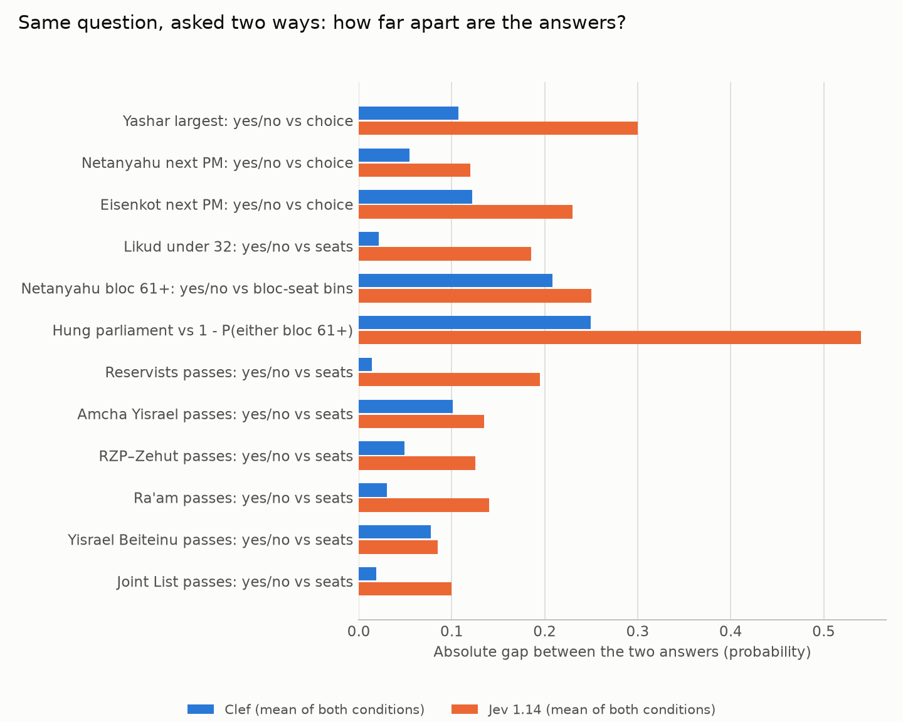

Run: 2026-10-22T1942Z. The forecast was frozen on 22 October 2026, five days before polling day on 27 October.
Panel: cloudflare/clef (Clef) and typesafe/jev-1.14 (Jev 1.14), called through OpenRouter's System One endpoint. No LLMs and no judge.
Cost of the run: $0.0159 for 4 requests and 39 questions each, 156 answers in all.
Repo: https://github.com/danielrosehill/Israeli-Elections-2026
Decision models don't write text. They take a block of evidence (the state) and a set of typed questions, and return probabilities:
noul);choice);score).The panel answered 39 election-only questions in six groups:
Several questions ask for the same quantity in two different ways, so each model's internal consistency can be measured.
Both models received the same frozen evidence pack, about 25–29k tokens, under two conditions:
The resolution rule for every question is written down in questions.json and was fixed before the run. When the CEC certifies the result, every answer will get a Brier score, and so will the market prices.

Without the market prices, both models favour Likud as the largest list and Netanyahu as the next prime minister:
| Clef | Jev 1.14 | |
|---|---|---|
| Likud largest list | 0.63 | 0.87 |
| Netanyahu next PM | 0.81 | 0.49 |
Add the market section and both models flip:
| Clef | Jev 1.14 | Market | |
|---|---|---|---|
| Yashar largest list | 0.73 | 0.96 | 0.69 |
| Eisenkot next PM | 0.55 | 0.73 | 0.49 |
The market moved both models past the market's own price, not just towards it. This is the clearest finding of the run: for the headline questions, these models are mostly reading the market back. The polls are the same in both conditions. Their mean has Likud at 23.2 seats and Yashar at 21.5, and neither model's seat estimates change much between conditions (next chart).
Jev's flip goes furthest. At 0.96 for Yashar it is more confident than any market or poll average supports.

Expected seats, from each model's full seat distribution, against the mean of the 24 polls published since 8 October:
| List | Poll mean | Clef (no mkt / mkt) | Jev (no mkt / mkt) |
|---|---|---|---|
| Likud | 23.2 | 24.2 / 23.0 | 28.5 / 24.8 |
| Yashar | 21.5 | 20.3 / 21.1 | 20.9 / 21.3 |
| Together | 12.0 | 12.2 / 12.1 | 11.6 / 12.2 |
| The Democrats | 8.9 | 8.9 / 8.2 | 8.9 / 8.6 |
| Shas | 8.0 | 8.4 / 7.8 | 9.0 / 8.5 |
| Joint List | 8.0 | 8.5 / 8.1 | 7.8 / 8.0 |
| Otzma Yehudit | 8.0 | 7.2 / 7.0 | 7.9 / 7.8 |
| UTJ | 7.7 | 6.5 / 6.6 | 7.9 / 7.9 |
| Yisrael Beiteinu | 7.4 | 6.3 / 6.6 | 7.9 / 7.3 |
| RZP–Zehut | 6.3 | 6.9 / 6.7 | 6.9 / 6.3 |
| Ra'am | 5.4 | 5.5 / 5.9 | 5.8 / 5.6 |
| Reservists + Economic | 2.1 | 1.8 / 1.9 | 2.5 / 2.5 |
| Amcha Yisrael | 1.5 | 1.3 / 1.1 | 0.6 / 0.5 |
Clef tracks the poll mean within about one seat everywhere. Jev without markets puts Likud 5 seats above the polls, which explains its 0.87 for Likud as the largest list. That extra Likud weight disappears once the market section is added.
The seat questions were answered independently, so the expected seats don't have to sum to 120:

The two lists that actually matter are both expected to fall short of the threshold:
Both models put P(both fail) at 0.46–0.66.
Everything polled above about 5 seats is at least 0.81 to pass.
One clear miss: Jev without markets gave Noam, which polls at zero, a 0.53 chance of passing. That fell to 0.14 once market prices were present.
Clef's bloc answers match the polls. The poll mean has both blocs at about 53 seats, with the Arab lists holding the balance. Jev's don't: it gives the opposition 0.75 to reach 61 even though its own seat estimates for those lists sum to about 52.

Twelve pairs of questions ask for the same probability in two forms. Mean absolute gap within each pair:
Jev's worst cases:
Clef's largest inconsistency is with markets: Eisenkot PM? gets 0.75 as a yes/no question but 0.55 as a choice.
Both models put P(turnout below 2022's 70.6%) at 0.49–0.56, which amounts to no view. With markets, both concentrate the votes-cast distribution on 5.2–5.3 million, the Kalshi ladder's centre.
POST https://openrouter.ai/api/v1/systemone. Decision models are hidden from OpenRouter's model list unless the query has ?output_modalities=all.score questions take at most 10 options, so the seat questions are choice questions keyed by seat count.manifest.json. The exact states sent are state_no_markets.md and state_with_markets.md.| Request | Provider | Input tokens | Cost (USD) |
|---|---|---|---|
| Jev 1.14, without markets | TypeSafe | 25,359 | 0.00107 |
| Jev 1.14, with markets | TypeSafe | 27,115 | 0.00114 |
| Clef, without markets | DeepInfra | 27,708 | 0.00665 |
| Clef, with markets | DeepInfra | 29,447 | 0.00707 |
| Total | 0.01592 |